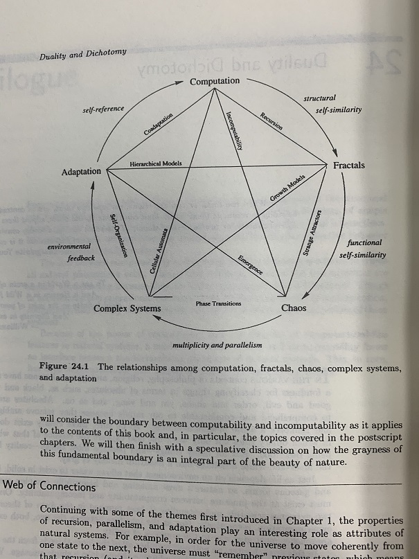
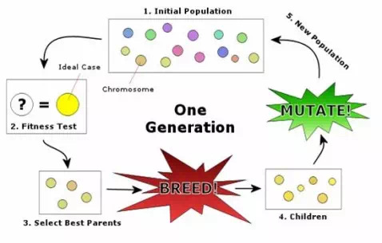
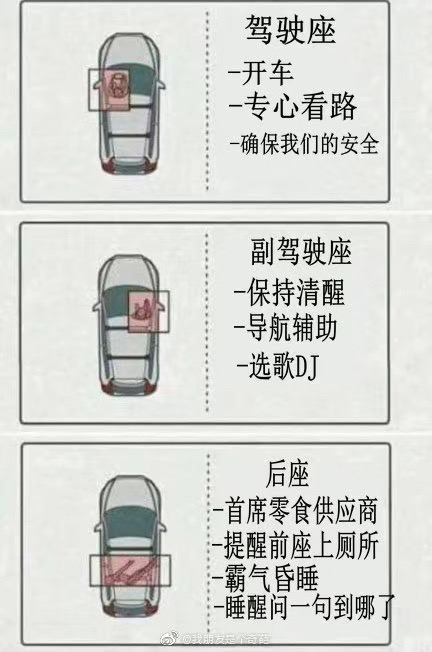
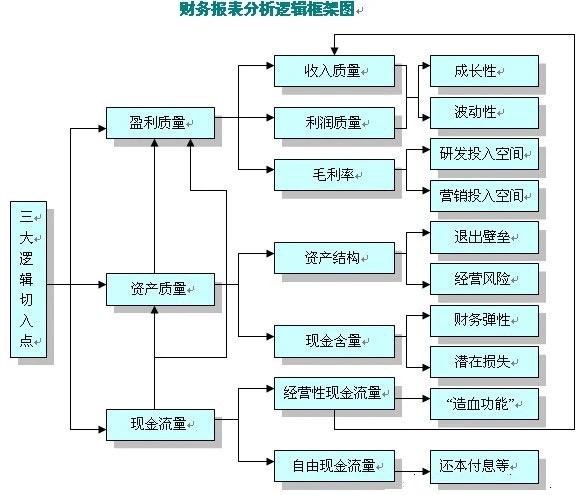

1、雄安：许多个化为一个。
2、延安：少吃多动身体好。
3、明朝：多交朋友，学习穿着打扮，不要多愁善感。
4、宋朝：蘑菇圆，蘑菇静，蘑菇有鲜味。
5、唐朝：字须熟后生，画须熟外熟。
6、汉朝：有三必有五，有五必有七。
7、秦朝：我不是怀旧，我是要记得。
8、周朝：行到水穷处，坐看云起时。
喻良教授从“问题”这一概念的数学化开始，“问题”被定义为一集自然数，并通过一些例子展示了这种定义的合理性。接下来，喻老师讨论了图灵机和可判定性，并列举了一些不可判定问题，如停机问题、一阶数论、希尔伯特第十问题等，然后引入了图灵归约和图灵度的概念，并借此引出讲座的核心问题：“归约到停机问题”是否是证明一个问题不可判定的唯一方法？喻老师详细地介绍了历史上对这个问题的两个看似相反的回答：首先是Sacks等人证明的定理“几乎所有的问题都不比停机问题更困难”，然后是Posner-Robinson定理“每个不可解问题都可以在某种意义上归约到停机问题”。接下来，喻老师介绍了与此相关的著名的马丁猜想，并证明了马丁猜想在集合论公理系统ZFC中不成立。
讲座的第二部分，喻老师详细讲解了随机性。他首先介绍了历史上对于随机性的三种不同的定义，这三种定义被Schnorr证明是等价的，它们分别从不同的视角（不可压缩性、无区别性、不可预知性）来刻画随机性。然后介绍了Chaitin对于随机实数的典范构造，Miller和他对于1-随机性的等价刻画，以及van Lambalgen对于随机对的等价刻画。接下来，喻老师深入讨论了随机性的比较问题，引入了四种随机实数之间的大小关系，并介绍了Miller和他对于这些关系的研究，从而揭示了“越随机计算能力就越弱”这一深刻现象。
我是做数理逻辑的，我在研究中发现，一个随机的东西是包含很多信息的，但可以证明，越随机的东西计算能力越弱。人们可能会认为随机的东西信息越多，所提供的知识就越多，但实际上恰恰相反。这对哲学家们来说可能是个很好的切口，哲学家可以去解释数学家所提出的概念，将哲学和科学结合起来，帮助科学家们理解认识这种现象。
1、Intelligence moves out to the edge of the network.

2、Horizontal beats vertical.

3、Capital sloshes around seeking its highest return.
4、The military drives commerce and vice versa.
5、The Industrial Revolution, Early Capital Markets.

6、Components Needed for Computing, Digital Computers.
7、Modern Capital Markets.

8、Lower prices drive wealth.